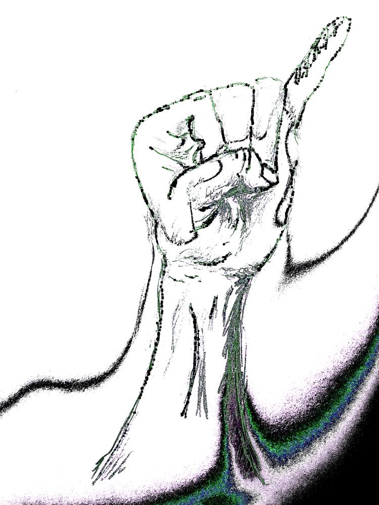

Escape Control Alt Meta Shift

Rock climbing, guitar playing, ivory tickling, and GNU Emacs are all inextricable parts of my life. And all of them demand far too much of my left pinky. After slightly straining my left wrist on a crimpy dynamic slab, I have become acutely aware of the punishing ritual I subject my weakest finger to from dawn till dusk.
Emacs pinky is an undeniable issue amongst programmers. I already alleviate
stress by using evil-mode, remapping Caps Lock to Escape, and raising my
wrists above the keyboard by shoving a sweater underneath my arms. However, I
still expect my left pinky to auto-complete with Tab, return to command mode
with Caps Lock (masquerading as Escape), capitalise letters with Shift,
change buffers (and run countless other Emacs commands) with Control, switch
windows via sway with Super (aka Meta or the Windows key), and, of course,
press Alt to help summon the genie <M-x>.
I should surely be able to find some method to further reduce my poor digit's burden.
Space as a leading key?
Doom Emacs and Spacemacs eschew Control in favour of Space for commands.
The briefest of flirtations with Doom has convinced me for life that there is
nothing as perverse as using another human's Emacs config. Afer restoring my
~/.emacs.d/ and sanity, I found no easy way to extricate the leading space
behaviour from either Doom and Spacemacs.
I delved further into abondoned forums to seek a more viable (and less deviant) option.
Caps as Escape and Control?
caps2esc showed promise. It remaps not only Caps Lock to Escape, but also
allows Caps Lock to act as Control whilst it is held down. space2meta
remaps Space to Meta (aka Super) whilst it is held down. And both run on
the udev level so they are window manager agnostic and work in TTY!
I started copy-pasting code and creating my own caps2meta, return2meta, and
space2ctrl, until I thought there must be an even better solution.
And, indeed, there is.
Dual Function Keys
Dual Function Keys allows anybody to remap any key to any other key when it is tapped, double-tapped or held down.
To install on Arch Linux, simply:
sudo pacman -S interception-dual-function-keys
Then create a YAML file describing the key remappings required. In my personal
config: Caps Lock becomes Escape when tapped, and Meta / Super when
held; Space becomes Ctrl when held; Enter / Return becomes Meta /
Super when held.
~/.config/dfk.yaml
TIMING:
TAP_MILLISEC: 200
DOUBLE_TAP_MILLISEC: 150
MAPPINGS:
- KEY: KEY_CAPSLOCK
TAP: KEY_ESC
HOLD: KEY_LEFTMETA
- KEY: KEY_SPACE
TAP: KEY_SPACE
HOLD: KEY_LEFTCTRL
- KEY: KEY_ENTER
TAP: KEY_ENTER
HOLD: KEY_LEFTMETA
Create a YAML file in /etc/interception/udevmon.d/ for the system
configuration.
/etc/interception/udevmon.d/keys.yaml
- JOB: intercept -g $DEVNODE | dual-function-keys -c /path/to/dfk.yaml | uinput -d $DEVNODE
DEVICE:
EVENTS:
EV_KEY: [KEY_CAPSLOCK, KEY_SPACE, KEY_ENTER]
Now to get the keybindings up and running:
sudo udevmon
To have the keybindings start automatically at boot-time:
sudo systemctl enable udevmon sudo systemctl start udevmon
Addendum
Et voilà! My thumb and right pinky can now relieve my left pinky of most of its duties. And I'll soon be back on the wall, cursing crimpy dynamic slabs.